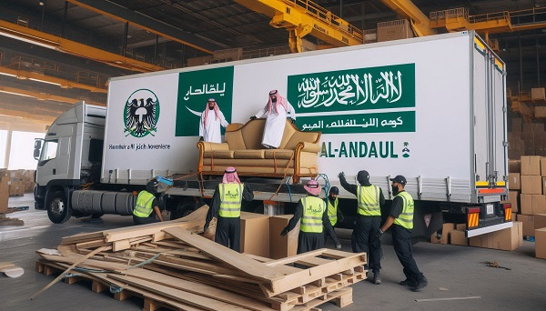

الخدمات التي تقدمه شركة الأندلس:
حرصت شركةالأندلس لنقل الأثاث بالمملكة العربية السعودية على توفير خدمة نقل اثاث
متكاملة لرفع عبء المجهود والتكلفة الذي يقع على عاتق العملاء عند
الرغبة في نقل الأثاث من مكان لأخر، خاصة في حالة زيادة كمية الأثاث
المنقولة ومسافة النقل، فعلي عكس الشركات المنافسة نوفر جميع
الخدمات التي تحتاج إليها خدمة النقل لضمان أعلى مستوى من الأمان
والسلامة للمنقولات، والتي تتمثل في:
-
خدمة فك وتركيب الأثاث بمختلف أنواعه.
-
خدمة تغليف الأثاث مهما كان نوعه أو حجمه.
-
خدمة رفع وإنزال الأثاث من خلال العمال أو الأوناش و السلالم الكهربائية.
-
خدمة نقل الأثاث داخل سيارات النقل المفتوحة والمغلقة والمزودة بنظام الجي بي اس.

فك الأثاث
عملية فك الأثاث تمثل الخطوة الأولى والأساسية في خدمة نقل وتركيب الأثاث، وهي تتطلب دقة واهتماماً كبيرين لضمان سلامة الأثاث وعدم تعرضه لأي ضرر أو تلف.
يتم إعداد الأدوات والمعدات اللازمة لعملية الفك، مثل مفكات البراغي، وأدوات التثبيت، والأدوات اللازمة لحماية الأثاث مثل أغطية النقل والمواد العازلة.
لذلك حرصنا على أن نمتلك نخبة من فنى الفك والتركيب
القادرين على فك وتركيب أي نوع من الأثاث باحترافية خلال وقت
قياسي، مما ساعد على تسهيل مهمة نقلها بالتزامن مع ضمان
سلامتها من الخدوش والكسور.
تغليف الأثاث:
المرحلة الثانية في خدمة نقل وتركيب الأثاث هي عملية التغليف،
تشمل استخدام مواد عالية الجودة مثل البلاستيك الفقاعي والأفلام التماسك لتغليف كل قطعة من الأثاث بشكل فردي وحمايتها من الخدوش والتلف أثناء النقل. يتم وضع تسميات وتوثيق دقيق لكل قطعة لسهولة التعرف عليها، مما يساعد في تجنب فقدان أو خلط الأثاث. تهدف هذه الخدمة إلى توفير حماية مثلى وتأمين سلامة الأثاث خلال عملية النقل، مما يضمن وصوله إلى وجهته بدون أي ضرر.

نقل الأثاث:
المرحلة الثالثة في خدمة نقل وتركيب الأثاث هي عملية النقل،
رحلة نقل الأثاث تمثل جزءًا أساسيًا في خدمة نقل وتركيب الأثاث، وتشمل عملية نقل الأثاث من موقعه الحالي إلى الموقع الجديد بأمان وفعالية
حيث يتم تحميل الأثاث بحرفية في شاحنات مجهزة، ونقله بسلامة إلى الموقع الجديد. يتم تفريغ الأثاث بحذر وترتيبه وفقًا لتوجيهات العميل، مع إجراء فحص نهائي لضمان سلامته، وتركيبه بدقة في المواقع المحددة.

تركيب الأثاث:
شركة الاندلس لنقل الأثاث بالمملكة العربية السعودية تقدم خدمة تركيب الأثاث كأخر مرحلة في عملية نقل الأثاث. يتم التحضير والتجميع بدقة عالية بواسطة فنيين متخصصين، مما يضمن استعادة الأثاث إلى شكله الأصلي بأمان ودون أي ضرر. الخدمة تركز على الدقة والجودة لضمان رضا العملاء وتقديم خدمة محترفة وفعالة.